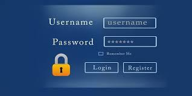

Recomendaciones
Siempre leemos historias en las que grandes servicios en línea han sido víctimas de algún fallo de seguridad, lo que hace vulnerables a todas las cuentas de sus clientes, con el riesgo a ser robadas, y con ellas toda la información personal de cada usuario.
No uses la misma contraseña en todos lados
Obviamente si usas una contraseña simple de adivinar y además la colocas en todos los servicios que tengas en Internet, tus datos van a estar en peligro una vez que alguien la adivine. Así que, necesitarás crear distintas contraseñas para todos los servicios y lo ideal para esto es crear una fórmula que funcione sólo para ti.

No uses datos personales
Es muy importante que evites el uso de datos que cualquiera puede descubrir solo mirando tu perfil de Facebook. Sin embargo, hay datos que aún serán personales y que puedes utilizar, pero que no sean del dominio público o que consideres poco comunes. Por ejemplo, si una tus cosas favoritas son las series de televisión, puedes usar el nombre de varios programas que te gusten para crear contraseñas mezclandolos con otros datos.
Crea patrones
Otra gran idea es memorizar patrones en el teclado, pero también dependerá de que tan buena memoria visual tengas. Sería como recordar un patrón largo para desbloquear el teléfono solo que en el teclado de un ordenador. De esta forma siempre harás los mismos movimientos y realmente no importará mucho qué carácteres incluya, con tal de que tengan números, letras y símbolos.
Números en lugar de letras
Una contraseña segura debe incluir todo tipo de carácteres y una forma de hacerlo es convertir ciertas letras a números que tengan una forma similar. Por ejemplo, digamos que escogiste la frase “YoQuieroUsarYAHOO” como contraseña para crear una cuenta en Yahoo. Para hacerla más segura, puedes introducir números cambiando ciertas letras, lo que haría que tuvieras algo como esto: “Y0Qu13R0Us4rY4H00”. Pareciera que estuviese escrito por un adolescente en un photolog, pero valdrá la pena porque aumentará mucho su seguridad.